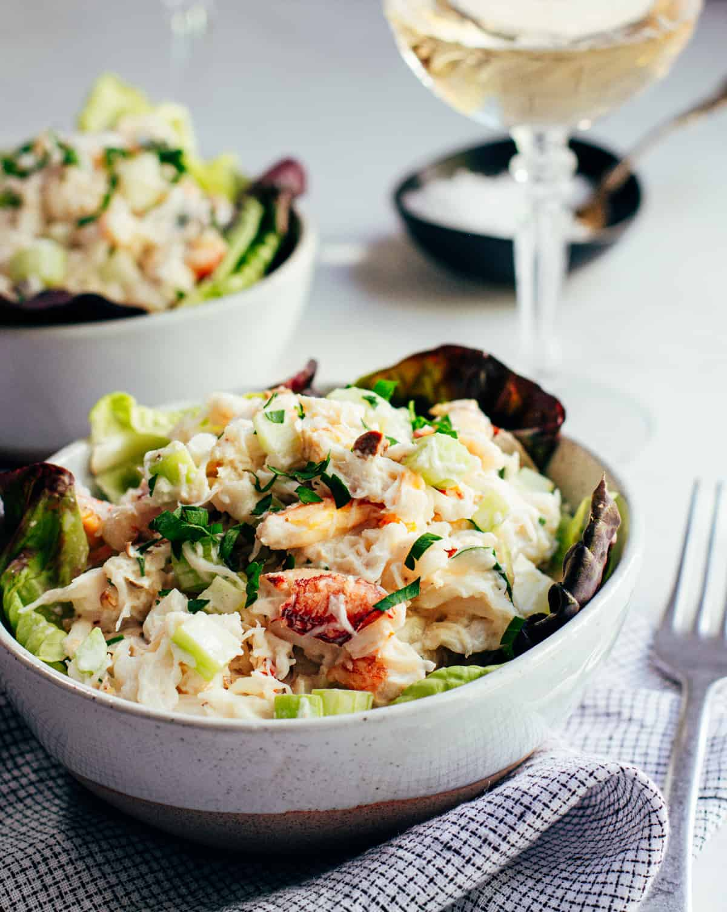

Fluffy Pancakes

Fluffy Pancakes Ingredients
These are the ingredients you’ll need for this summer-perfect crab salad recipe:
- ¾ cup milk
- 2 tablespoons white vinegar
- 1 cup all-purpose flour
- 2 tablespoons white sugar
- 1 teaspoon baking powder
- ½ teaspoon salt
- 1 egg
- 2 tablespoons butter, melted
- cooking spray
Directions
Step 1
Combine milk and vinegar in a medium bowl and set aside for 5 minutes to make sour milk.
Step 2
Combine flour, sugar, baking powder, baking soda, and salt in a large mixing bowl. Whisk egg and butter into soured milk. Pour flour mixture into milk mixture and whisk until lumps are gone.
Step 3
Heat a large skillet over medium heat, and coat it with cooking spray. Pour 1/4 cupfuls of batter onto the skillet, and cook until bubbles form and the edges are dry, about 2 to 3 minutes. Flip with a spatula, and cook until browned on the other side. Repeat with remaining batter.
Directions
230 Calories
8g Fat
33g Carbs
6g Proteins
Go back